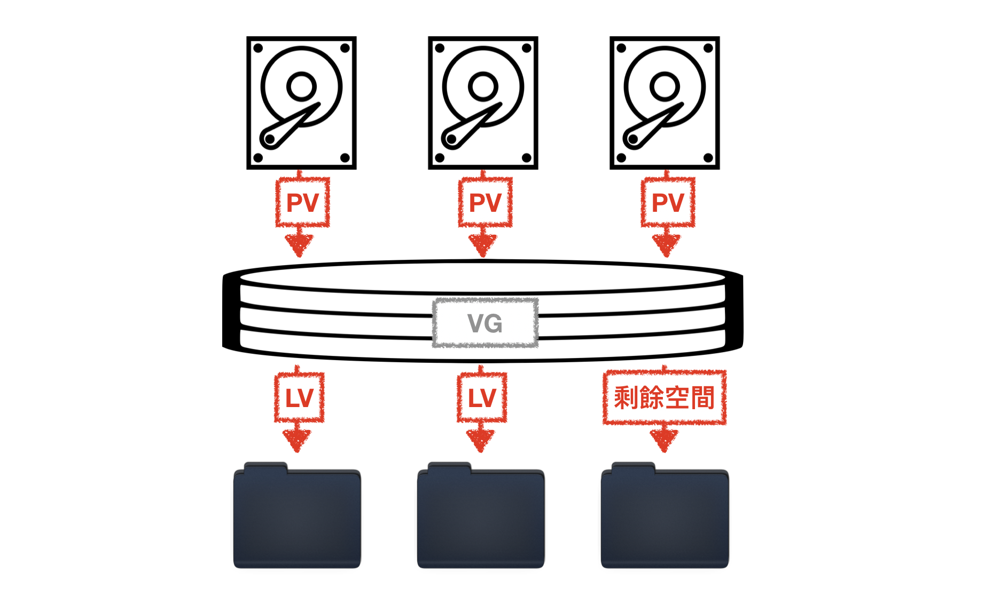
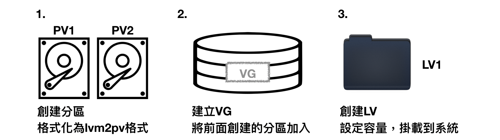
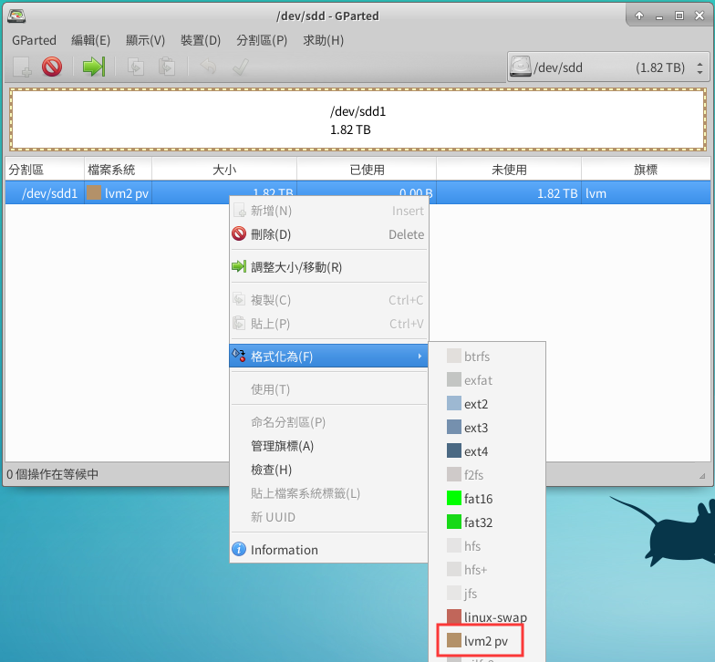
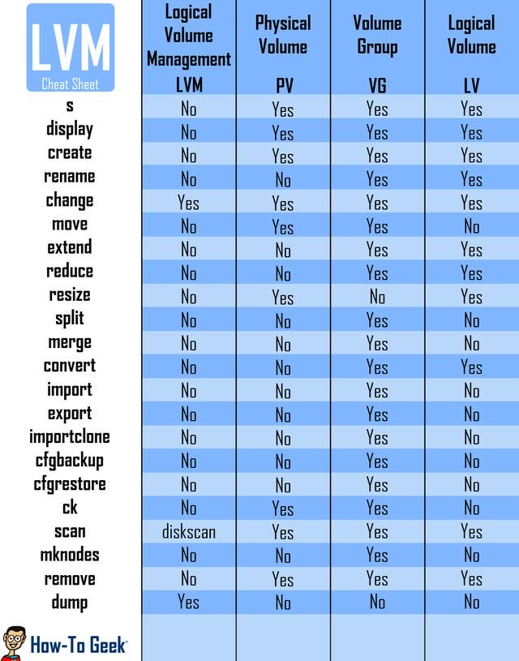
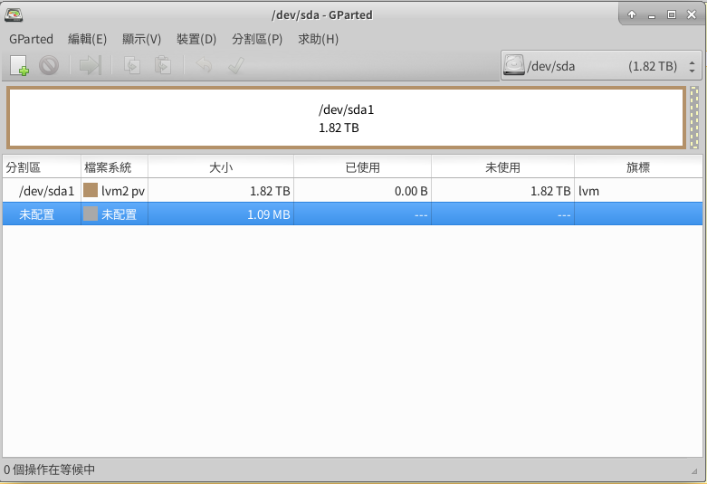

前言
這台硬碟上裝了5顆硬碟(2顆2.5’ SSD、2顆3.5’ HDD、1顆m.2 SSD)，因為我們實驗室處理的資料量都頗大，動不動就500GB-1TB，如果單純地根據硬碟分開儲存的話，可能會浪費很多剩餘空間，而且在跑資料的時候可能會產生其他資料，這又導致不能預先切割硬碟來符合檔案大小(而且很麻煩)，為了方便合理的利用所有硬碟空間，我決定將硬碟整合起來一起管理。
在找合適的硬碟管理方法的時候，有想過組一個RAID 0的磁碟陣列，不過考慮到之後的擴充需求加上實驗室已經有一台NAS來儲存資料，不需要太擔心資料的完整性，所以查到了LVM的方法來管理資料儲存。
LVM介紹
LVM是 Logical Volume Manager(邏輯卷管理)的簡寫，LVM會將一個或多個硬碟的分區在邏輯上集合，可以直接把它當作一顆大硬碟來用，當硬碟空間不足的時候，可以從剩餘空間上劃分一些空間給其他空間不夠的分區使用。
簡單地以一張圖來表示：

不過我這邊只是打算單純地以SSD和HDD兩種不同的硬碟來組成LVM，分別管理讀寫速率不一樣的兩種硬碟。
名詞介紹
PV：Physical Volume，物理的磁碟分區，也就是硬碟上的分區，分區要變成PV後，LVM才能利用那個分區。
VG：Volume Group，將所有PV加入VG整合起來，可以理解成一個倉庫或是幾個大的硬碟。
LV：Logical Volume，從VG中劃分空間分配給LV，會建立一個裝置代號放在系統中，即最後被掛載道系統的分區。
經過PV、VG規劃後，可以理解成，把分區整合成一個大的硬碟，再利用這顆硬碟來分割分區或是格式化，不過這顆大硬碟可以增加或是減少分區的容量，而且原本的資料不會受到影響。
LVM建立流程
- 建立硬碟分區，這裏因為只是想要單純的分成SSD和HDD，所以就直接把整顆硬碟當作一顆分區來建立，格式化的時候記得使用
lvm2的格式(在fdisk中編號為8e)。 - 創建VG，將前面所創立的PV加入到VG中，VG命名建議以
vg開頭，這樣容易辨識出這是一個VG。 - 創建LV，直接設定容量到你要創建的空間，再掛載到系統就行了。
簡單的三個步驟就可以完成創建LVM了，下面以圖示來說明：

[實作]LVM硬碟整合
先用之前裝過的Gparted把要加入的硬碟全部格式化為lvm2 pv，如果是新硬碟記得要先新增分割表。

另外記得選擇完後Gparted還不會幫你格式化，要記得點選上面的綠色勾勾，才會應用你的配置。
接下來建立VG，這裡我們直接把HDD跟SSD兩個VG創建出來：
1 | sudo vgcreate vgHDD /dev/sda1 /dev/sdb1 |
2 | sudo vgcreate vgSSD /dev/sda1 /dev/sdb1 |
這樣我們就創立好兩個VG了，如果要添加新的PV可以使用：
1 | sudo vgextend YourVG /dev/NewPVDisk |
對VG來切割LV出來，這邊使用所有空間，然後用lvdisplay來查看資訊：
1 | sudo lvcreate -l 100%FREE -n HDD vgHDD |
2 | sudo lvcreate -l 100%FREE -n SSD vgSSD |
3 | sudo lvdisplay |
4 | # output1 |
5 | LV Path /dev/vgHDD/HDD |
6 | LV Name HDD |
7 | VG Name vgHDD |
8 | # output2 |
9 | LV Path /dev/vgSSD/SSD |
10 | LV Name SSD |
11 | VG Name vgSSD |
格式化HDD這個LV，再掛載到需要的位置，這邊用mkfs用xfs的格式來格式化硬碟，要使用mkfs.xfs要記得先安裝xfsprogs：
1 | sudo apt-get install xfsprogs |
2 | sudo mkfs.xfs /dev/vgHDD/HDD |
3 | sudo mkfs.xfs /dev/vgSSD/SSD |
接下來掛載到/mnt，這邊放在/mnt裡面統一管理：
1 | sudo mkdir /mnt/HDD /mnt/SSD |
2 | sudo mount /dev/vgHDD/HDD /mnt/HDD |
3 | sudo mount /dev/vgSSD/SSD /mnt/SSD |
管理LVM
在網路上找到這張圖：

使用方法就是(PV, VG, LV) + 左邊的指令：
1 | # 查看所有LVM的PV |
2 | sudo pvs |
3 | # 查看更詳細的資訊 |
4 | sudo pvdisplay |
另外如果以後新增了更多硬碟，也可以透過lvcreate來組成RAID1, RAID5, RAID6。
補充
因為之前硬碟放在其他系統上運作，所以上面有一些預設的磁區，我發現上面有些詞曲沒刪乾淨，所以遇到了下面這個狀況，硬碟是HDD的硬碟：

看了很討厭，所以就進行了更改：
1 | # 卸載之前掛載的PV |
2 | sudo umount /dev/vgHDD/HDD |
3 | # 刪除LV |
4 | sudo lvremove vgHDD/HDD |
5 | # 轉移資料，將/dev/sda1裡的資料轉移出去 |
6 | sudo pvmove /dev/sda1 |
7 | # 從VG中移除PV |
8 | sudo vgreduce vgHDD /dev/sda1 |
這時候你可以透過Gparted或是用lvm的指令來建立新的lvm分區，再來將新的分區添加到vgHDD中：
1 | sudo vgextend vgHDD /dev/sda1 |
接下來重複上面的格式化跟掛載步驟就行。